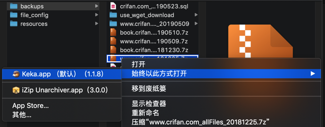

Mac
zip
zip工具：
- Mac自带
- 用法：
- 文件或文件夹 -> 右键 -> 压缩xxx
- 压缩后会自动打开对应zip所在目录
- 文件或文件夹 -> 右键 -> 压缩xxx
- 用法：
iZip UnarchiverKeka


7z
7z工具：
- GUI图形界面工具
Keka
- 用法
- 右键
7z文件，可以用Keka去打开（自动开始解压缩）- 
- 右键
MacZip- 旧称：
eZip - logo
- 官网
- MacZip - 专为 macOS 而设计的压缩软件！
- 特点
- 支持超过 20 种压缩格式
- 支持 rar, zip, 7z, tar, gz, bz2, iso, xz, lzma, apk, lz4 等超过 20 种常见压缩格式
- 完美处理加密解密、中文乱码等问题
- 支持超过 20 种压缩格式
- 旧称：
- 命令行工具
p7zip- 安装：
brew install p7zip- 安装后，命令行工具名是：
7z> which 7z /usr/local/bin/7z - 后来发现也有
7za> which 7za /usr/local/bin/7za
- 安装后，命令行工具名是：
- 使用方法详见后续章节
- 安装：